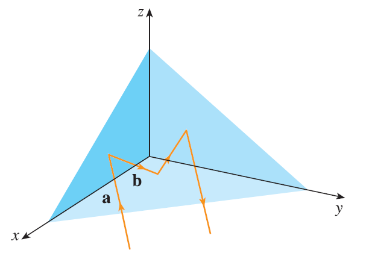

Suppose the three coordinate planes are all mirrored and a light ray given by the vector \(\mathbf{a} = \langle a_1, a_2, a_3 \rangle\) first strikes the xz-plane, as shown in the figure. Use the fact that the angle of incidence equals the angle of reflection to show that the direction of the reflected ray is given by \(\mathbf{b} = \langle a_1, -a_2, a_3 \rangle\). Deduce that, after being reflected by all three mutually perpendicular mirrors, the resulting ray is parallel to the initial ray.